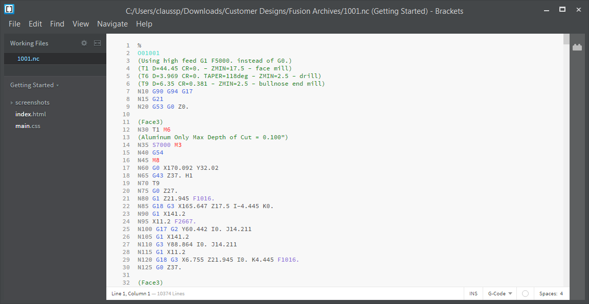

Buat program CNC dengan Fusion 360
Mulailah membuat Model dengan Fusion 360!
Program pemodelan memungkinkan Anda membuat dan memvisualisasikan produk akhir, memodifikasi dan mengoptimalkan desain, serta mendokumentasikan desain, pengukuran, dan bahan dengan mudah. Jika Anda pernah mendengar tentang pencetakan 3D, pemodelan 3D adalah apa yang digunakan untuk mendesain objek sebelum dicetak 3D.
Pro-tip: Model komputer digunakan untuk mengkomunikasikan dimensi, jenis material, dll. kepada siapa pun yang melihat desain, dan dapat digunakan untuk membuat jalur kontrol untuk mesin Computer Numerical Controlled (CNC).
Catatan: Proses perakitan di Fusion 360 sedikit berbeda dari program lain. Alih-alih membuka file perakitan baru, Fusion 360 memiliki metodologi desain "top-down" di mana Anda dapat mendesain seluruh sistem Anda dalam satu file, bersama dengan bagian-bagian Anda. Jika Anda ingin membuat bagian baru, pilih "Komponen Baru" saat Anda menggunakan fitur (seperti extrude, revolve, dll) untuk membuat dan mengerjakan bagian baru. Jika Anda ingin menambahkan bagian yang telah Anda rancang dalam file desain terpisah, pilih "Buat Fitur Dasar".
Informasi berikut adalah semua yang perlu Anda lakukan sebelum memulai dengan produk baru Anda yang berharga!
Buat sketsa 💩
Di Fusion 360, Anda dapat menggunakan alat Sketsa untuk membuat profil sketsa yang mendorong bentuk benda padat, permukaan, dan T-Spline dalam desain Anda. Sketsa adalah geometri dasar yang mendukung pembuatan benda padat, permukaan, dan T-Spline 3D dalam desain Anda.
Pro-tip: Sketsa sering menjadi dasar dari mana Anda membuat benda padat, permukaan, dan T-Spline dalam desain Anda, seringkali dalam konteks perakitan. Anda dapat mempelajari lebih lanjut tentang berbagai jenis pemodelan 3D dan perakitan di sini!
❗️ Lembar Sketsa
Sketsa gambar adalah sekelompok geometri non-asosiatif khusus, yang digambar secara manual dalam lingkungan kontekstual Sketsa dalam ruang kerja Menggambar.Dalam lingkungan kontekstual Sketch , Anda dapat membuat, memodifikasi, dan mengukur geometri sketsa dan teks.
Catatan: Menggambar sketsa adalah objek dokumentasi saja. Mereka tidak sama dengan sketsa yang Anda buat di ruang kerja Desain
😠Buat Model
Jika Anda baru mengenal program pemodelan 3D, sebagian besar akan memiliki tutorial pengantar sehingga Anda dapat mengenal perangkat lunak tersebut. Saya terutama akan menggunakan Autodesk Fusion 360untuk menunjukkan beberapa fungsi CAD, tetapi hampir semua prosedur yang akan saya tunjukkan dapat ditemukan di banyak program CAD.
Pro-tip: Dari bentuk dasar dan sketsa, hampir semua hal dapat dibuat menggunakan berbagai alat dan template yang disediakan oleh setiap program CAD!
❗️ Antarmuka Model
Setelah komponen dirancang, perlu diproduksi dan dibuat fisik. Beberapa program CAD akan membantu dalam proses manufaktur dengan apa yang disebut Computer Aided Manufacturing, atau CAM. Perangkat lunak CAM membantu para insinyur mengoptimalkan suku cadang mereka untuk jenis manufaktur tertentu, dan digunakan untuk memprogram mesin Computer Numerical Controlled (CNC) sehingga mereka tahu cara mengerjakan suku cadang tersebut.
Catatan: cobalah untuk memodelkannya dalam program pilihan Anda. Anda dapat mencoba memodelkan objek dunia nyata dengan mengukurnya dan kemudian membuat model komputer berdasarkan pengukuran tersebut, atau Anda dapat mencoba mendesain sesuatu yang selalu ingin Anda cetak 3D.
🌡️ Buat program NC
Gunakan ruang kerja Manufaktur di dalam Fusion 360 untuk beralih dari model desain ke bagian terprogram yang siap diproduksi. Buat operasi dan kemudian posting prosesnya untuk mendapatkan kode-G yang diperlukan yang dapat digunakan mesin untuk membuat bagian.
Catatan: Membuat jalur pahat tipe belok untuk pemesinan suku cadang pada mesin bubut atau gilingan putar. Proses tersebut dijelaskan mulai dari pembuatan pahat hingga pembuatan alur pahat belok dan alur!
❗️ jalur alat
Buat dan edit model manufaktur di ruang kerja Manufaktur untuk membantu membuat operasi manufaktur, tanpa memengaruhi model asli di ruang kerja Desain. Perubahan untuk kemudahan pembuatan dapat dilakukan langsung di dalam ruang kerja Manufaktur melalui lingkungan kontekstual model manufaktur.
Catatan: Anda dapat menggunakan model manufaktur untuk memprogram bagian untuk operasi pembubutan dan penggilingan.

🥵 G-code.
Pabrikan di seluruh dunia menggunakan pemrograman CNC untuk mengontrol peralatan mesin untuk memproduksi suku cadang. Inti dari proses manufaktur otomatis ini adalah serangkaian instruksi yang memberi tahu mesin CNC di mana – dan bagaimana – untuk bergerak. Instruksi ini disebut G-Code.
Catatan: G-code adalah bahasa yang sangat ringkas. Ambil, misalnya, baris kode ini: G01 X1 Y1 F20 T01 M03 S500
Dalam satu baris ini, kami memberikan serangkaian instruksi kepada mesin:
- G01 – Lakukan gerakan umpan linier
- X1/Y1 – Pindah ke koordinat X dan Y ini
- F20 – Bergerak dengan kecepatan umpan 20
- T01 – Gunakan Alat 1 untuk menyelesaikan pekerjaan
- M03 – Nyalakan spindel.
- S500 – Atur kecepatan spindel 500
Beberapa baris kode-G seperti ini digabungkan untuk membentuk program CNC yang lengkap. Mesin CNC Anda kemudian akan membaca kode satu baris pada satu waktu dari kiri ke kanan dan atas ke bawah, seperti membaca buku. Setiap set instruksi berada pada baris atau blok yang terpisah.
💅 Program G-Code
Tujuan dari setiap program kode-G adalah untuk menghasilkan suku cadang dengan cara yang paling aman dan seefisien mungkin. Untuk mencapai ini, Anda biasanya akan menemukan blok kode-G yang diatur dalam urutan tertentu seperti ini:

0 0 0- Mulai program CNC.
- Muat alat yang diperlukan.
- Hidupkan spindel.
- Nyalakan pendingin.
- Pindah ke posisi di atas bagian.
- Mulai proses pemesinan.
- Matikan pendingin.
- Matikan spindel.
- Pindah dari bagian tersebut ke lokasi yang aman.
- Akhiri program CNC.
💰 Simulasi
Simulasi mesin adalah kemampuan untuk mensimulasikan jalur pahat pada kembaran digital mesin Anda. Menggunakan Fitur ini di Fusion 360 adalah cara sederhana, mudah, dan akurat untuk memeriksa apakah jalur pahat Anda akurat dan aman untuk dijalankan pada perkakas mesin. Simulasi mesin mengoptimalkan proses untuk meningkatkan kualitas dan fleksibilitas, mengevaluasi parameter pemesinan, dan membuat keputusan manufaktur. Ini sering kali merupakan alat yang penting dalam hal mensimulasikan jalur alat secara akurat sebelum menjalankannya pada alat mesin.Simulasi mesin bertujuan untuk mengatasi pemutusan ini dengan memungkinkan pengguna untuk mendapatkan representasi yang lebih akurat tentang bagaimana kemungkinan kinerja bagian yang diprogram saat menjalankannya di mesin hidup.
Pro-tip: Menggunakan pembuat mesin di Fusion 360 adalah cara sederhana, mudah, dan akurat untuk memeriksa apakah jalur alat Anda tidak hanya akurat tetapi yang lebih penting, aman untuk dijalankan pada alat mesin.

Toolpath dimainkan dengan mengklik tombol Play pada Simulation player. Animasi kemudian dapat dijeda dan dimainkan dengan mengklik tombol Jeda dan Putar, masing-masing.Kecepatan dapat disesuaikan menggunakan penggeser laju gerak makan di bagian bawah pemutar. Memposisikan penggeser di tengah menghentikan animasi. Memposisikan penggeser ke kiri dan kanan membuat animasi berjalan mundur dan maju, masing-masing
🤠Pemesinan 4 Axis?
Pemesinan 4-Axis melibatkan tiga sumbu asli (X, Y, dan Z) ditambah sumbu A, yang merupakan sumbu rotasi di sekitar X. Pemesinan 4-Axis praktis ketika Anda membutuhkan lubang atau cut-out di sekitar silinder. Sumbu A, B, dan C diberi label menurut abjad dalam korelasi dengan X, Y, dan Z. Oleh karena itu, sumbu A adalah rotasi di sekitar sumbu X; sumbu B adalah rotasi di sekitar sumbu Y, dan sumbu C adalah rotasi di sekitar sumbu Z.
🤠Jalur Alat
Wrap Toolpath dapat menganalisis rantai yang dipilih dan membuat toolpath kontur putar 4-Axis. Opsi ini hanya tersedia di jalur alat Adaptif 2D, Saku 2D, dan Kontur 2D. Penting untuk selalu memilih geometri dari model 3D , sehingga jalur alat mempertahankan asosiatifitas. Konsepnya relatif sederhana: pilih tepi ke mesin dan kemudian pilih wajah yang mewakili jari-jari bagian silinder. Hasilnya, Fusion 360 akan menghitung geometri yang tidak terbungkus, membuat jalur pahat, dan membungkus ulang jalur pahat di sekitar radius yang ditentukan.
Pemesinan 5-Axis Dengan Fusion 360
Pemesinan 5-Axis dapat digunakan untuk mengerjakan bagian-bagian yang lebih kompleks, tetapi ini juga berarti ada kemungkinan yang lebih besar bahwa tabrakan dapat terjadi. Jika Anda secara rutin mengerjakan suku cadang yang memiliki kantong dalam dengan jari-jari kecil atau fitur yang sulit dijangkau yang perlu dipilih, Anda akan terbiasa dengan tantangan dalam menemukan opsi rakitan pahat, strategi, dan sumbu pahat yang tepat untuk mengerjakan fitur tersebut.